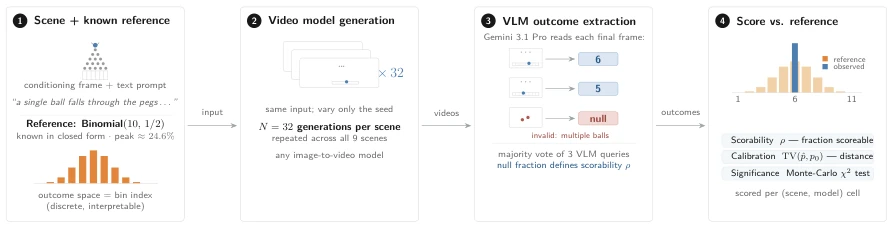
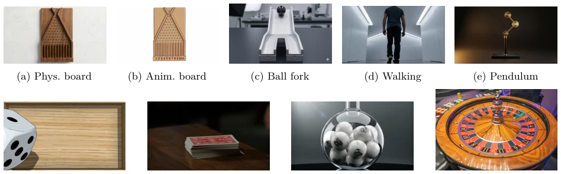
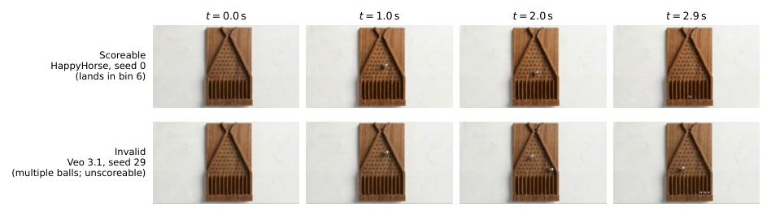
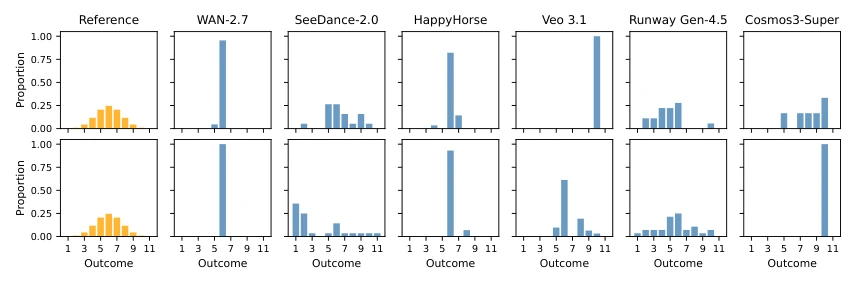
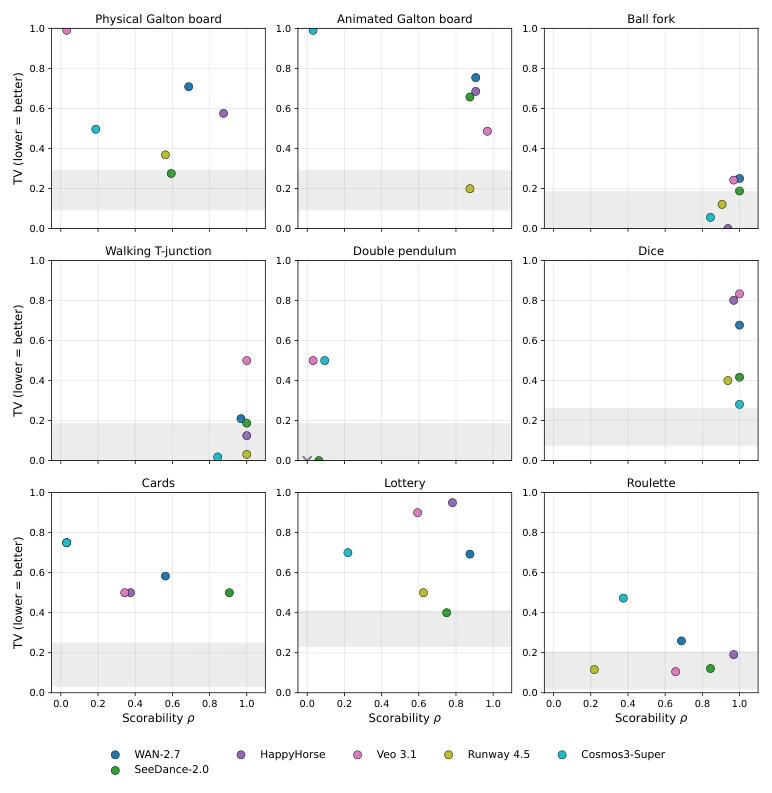
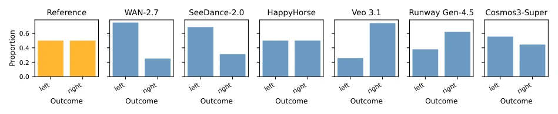
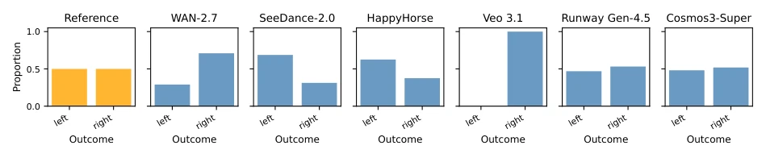
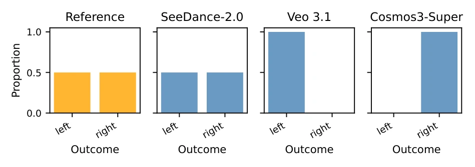
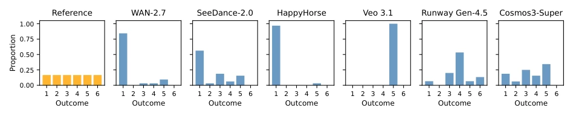
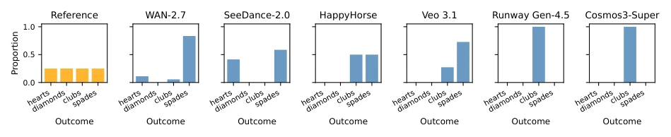

CaliBench delivers a 'physical slap' to video world models: videos generated by models appear plausible, yet their statistical distributions collapse entirely. These models either concentrate all probability on a single outcome (mode collapse) or fail to even calculate where a ball falls. The highlight is its directness, utilizing physical experiments with standard answers, such as Galton boards and dice, to measure 'calibration', forcing models to admit their lack of understanding of randomness. The drawback is that test scenarios remain too 'textbook'; where in the real world are there so many perfect binomial distributions? Furthermore, relying on VLM scoring means if the VLM misjudges, the results will also fluctuate. Nevertheless, this indeed strips away the 'shame curtain' between 'looking real' and 'being statistically real', although for model vendors, this report may be more unflattering than a negative review.
研究动机Motivation
现有视频世界模型评估主要关注单帧质量或整体分布距离（如 FVD），却忽略了物理现象中关键的“随机性校准”（Stochastic Calibration）。现有工作如 VBench (Huang et al., 2024) 或 PhysicsIQ (Motamed et al., 2025) 多聚焦于单样本的物理合理性或因果一致性，无法检测模型是否在宏观尺度上正确模拟了随机分布。例如，一个模型可能生成无数张“合理”的骰子落地图，但所有骰子都停在同一个点数，这在物理上是错误的，但传统指标可能无法察觉。Sadeghi 等人指出，这种系统性偏差会导致模型在安全关键领域（如自动驾驶）低估尾部风险。因此，亟需一种能直接对比生成分布与已知解析分布的基准，以揭示模型在模拟物理随机性时的“虚假繁荣”。
Existing video world model evaluations primarily focus on single-frame quality or overall distribution distance (e.g., FVD), overlooking the critical 'Stochastic Calibration' in physical phenomena. Existing works such as VBench (Huang et al., 2024) or PhysicsIQ (Motamed et al., 2025) mostly focus on single-sample physical rationality or causal consistency, failing to detect whether the model correctly simulates random distributions on a macroscopic scale. For instance, a model might generate countless 'reasonable' dice landing images, yet all dice land on the same number; this is physically incorrect, but traditional metrics may fail to detect it. Sadeghi et al. note that such systematic bias causes models to underestimate tail risks in safety-critical domains (e.g., autonomous driving). Therefore, there is an urgent need for a benchmark capable of directly comparing generated distributions with known analytical distributions to reveal the 'false prosperity' of models when simulating physical randomness.

Figure 1: Overview of the CaliBench protocol. (1) Each scene pairs a conditioning frame and text prompt with an analytically known reference distribution over a discrete, interpretable outcome space (e.g. Binomial(10, 1/2) over Galton-board bins). (2) A video model generates N=32 videos from identical inputs, varying only the random seed. (3) A vision–language model (Gemini 3.1 Pro, majority vote of three queries) extracts each video’s discrete outcome from its final frame. (4) We compare the empirical outcome distribution to the reference along two orthogonal axes: scorability ρ (fraction of scoreable generations) and calibration (total variation distance TV(ˆp, p0) from the reference).
CaliBench constructs a closed-loop evaluation process: first, 9 physical scenarios are designed (e.g., Galton board, double pendulum, roulette), each corresponding to an analytically known reference distribution (Binomial, Bernoulli, Uniform, etc.). Second, for each scenario, input frames and prompts are fixed, only changing random seeds to allow the model to generate 32 videos. Next, a VLM (Gemini 3.1 Pro) is utilized to discretely extract video outcomes (e.g., which slot the ball falls into, how many pips are facing up on the dice), and a 'Scorability' (ρ) metric is introduced to filter out videos with structural collapse. Finally, two orthogonal metrics are calculated: first, TVD (Total Variation Distance) measures the deviation between the generated and reference distributions; second, a Monte Carlo χ2 test determines if the deviation is significant. Scores are ultimately aggregated via normalized total variation (mnTV). The innovation lies in shifting the evaluation space from abstract feature space back to a physically interpretable discrete space, and decoupling 'generative validity' from 'distribution accuracy'.

Figure 2: Conditioning frames for all nine scenes. Top row (left to right): physical board, animated board [Binomial(10, 1/2)]; ball fork, walking, double pendulum [Bernoulli(1/2)]. Bottom row: dice, cards, lottery [Uniform]; roulette colour [known non-uniform].

Figure 3: Frame strips from two physical Galton-board video generations illustrating the two outcome categories. Top: a scoreable video generation (HappyHorse): a single ball is released, falls through the peg array, and comes to rest in a single bin. Bottom: an invalid video generation (Veo 3.1): the model generates multiple balls during the simulation, leaving the outcome unscoreable. Failures of this type drive the scorability ρ metric below 1.
Experiments were conducted on 6 SOTA video models (WAN-2.7, SeeDance-2.0, Veo 3.1, etc.) across 9 scenarios. Results indicate that all models exhibit significant calibration bias, with mnTV generally far exceeding 0. The most severe issue is mode collapse; for instance, Veo 3.1 in the dice scenario almost exclusively generates a single result. Performance varies significantly across different scenarios, with no model dominating all tasks. For example, Runway Gen-4.5 performs well on the animated Galton board but poorly on roulette. Ablation analysis (Appendix J) shows that reducing classifier free guidance (CFG) intensity can alleviate mode collapse but sacrifices scorability, revealing the fundamental trade-off between generation quality and distribution calibration.

Figure 4: Empirical bin distributions for each model (blue) vs. ground-truth Binomial(10, 1/2) (orange). Top: physical board. Bottom: animated board. Most models over-concentrate near the central bin, far exceeding the expected peak probability of 24.6%; on the animated board SeeDance-2.0 instead places excessive probability mass on the left tail (bin 1 and 2).

Figure 5: Scorability vs. total variation distance TV for all nine scenes. The bottom-right corner of each panel (high scorability, low TV) is the calibration target; no evaluated model approaches it consistently across scenes. The shaded band per panel is the central-95% envelope of TV under perfect calibration at nvalid = N, shown as a descriptive aid for interpreting the magnitude of TV relative to sampling noise — it is not a rejection region, and a marker’s position relative to the band is not equivalent to the calibration verdict (which comes from the Monte Carlo exact χ2 test). The band is drawn at nvalid = N = 32 per panel and does not directly characterise sampling noise for cells with ρ < 1 (those cells have a wider envelope, not shown). Because of the upward bias of the TV estim

Figure 6: Ball fork scene. Ground truth: Bernoulli(1/2) (uniform over left/right). Most models are close to calibrated; small TV values visible as mild left/right imbalance.

Figure 7: Walking (T-junction) scene. Ground truth: Bernoulli(1/2). Similar to the ball fork: most models show mild directional imbalance.

Figure 8: Double pendulum scene. Ground truth: Bernoulli(1/2). Only models with at least one valid video generation appear (SeeDance-2.0 with two, Veo 3.1 with one, and Cosmos3-Super with three; WAN, HappyHorse, and Runway produced none), so panels reflect very few samples.

Figure 9: Dice scene. Ground truth: Uniform{1, . . . , 6}. Mode collapse is severe for several models, with Veo 3.1 always producing the same face.

Figure 10: Cards scene. Ground truth: Uniform over 4 suits. Scorability failures dominate: five of six models have ρ < 0.6. SeeDance-2.0 retains the highest scorability (ρ = 0.91) and has the lowest TV among models with ρ > 0.5 (TV = 0.50, still significantly miscalibrated).